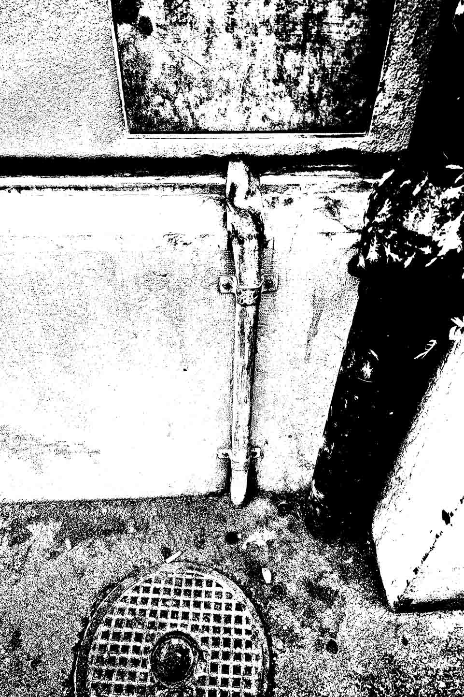
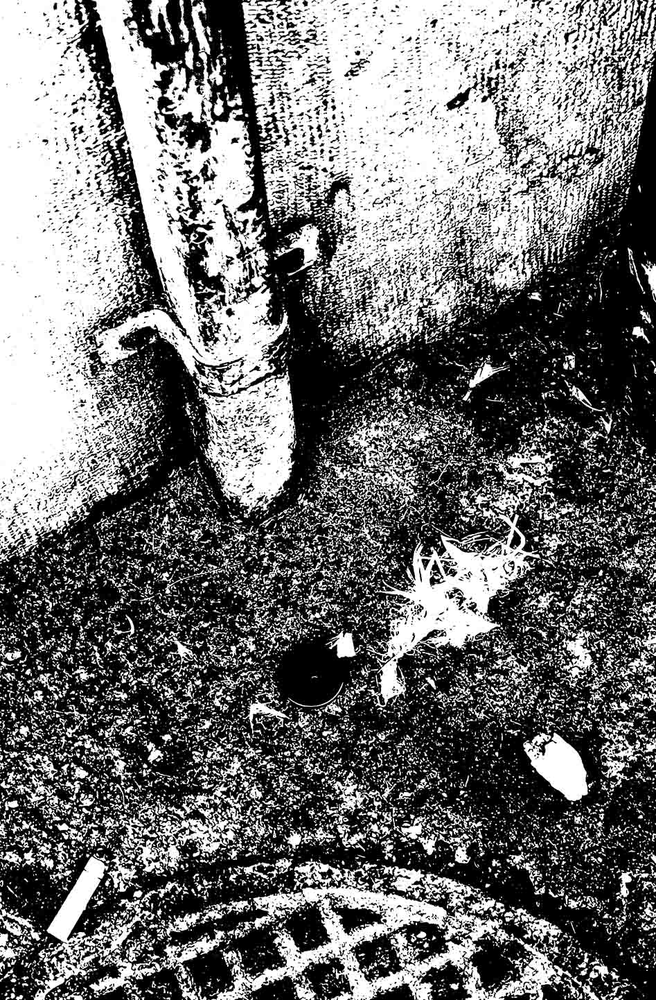

L'origine


L’idée de cette histoire est née lors d’une promenade d’inspiration que nous avons faite ensemble dans la ville de Berne. Au bord de la route, nous avons aperçu un bouton solitaire – discret, presque imperceptible. Son existence perdue a immédiatement stimulé notre imagination. Nous avons commencé à imaginer le chemin qu'il avait parcouru et l'avenir qui pouvait encore l'attendre. C'est ainsi que tout le récit a pris forme.
l'aventure